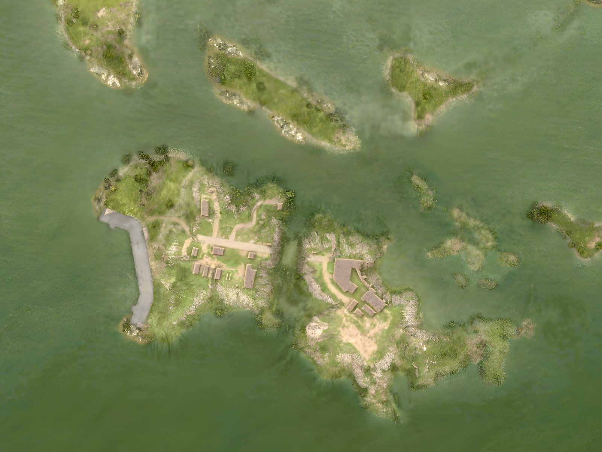

Quem colocou barraca, quem está deslogado e se há base com bandeira na ilha. Dados do registro do servidor lidos pelo Sentinela, conferidos em (Brasília).
0bandeiras ou bases na ilha
7barracas colocadas, de 6 jogadores
4contas deslogadas na ilha
Barraca colocadaConta deslogada

Toque num ponto (ou numa linha da lista) para ver quem é. Arraste para mover, use dois dedos ou a roda do mouse para dar zoom. Satélite do jogo, 2 px por metro.
Contas deslogadas
Última posição vista pelo Sentinela; todas fora do servidor agora.
Barracas colocadas
O registro mostra quando a barraca é colocada, não quando some. Pode já ter sido desmontada ou apodrecido.
Bandeiras
Nenhuma base com bandeira na ilha, de nenhum clã. Sem bandeira, nenhuma regra de base vale aqui: deslogar ou pôr barraca na ilha não leva ninguém ao Mar Morto.